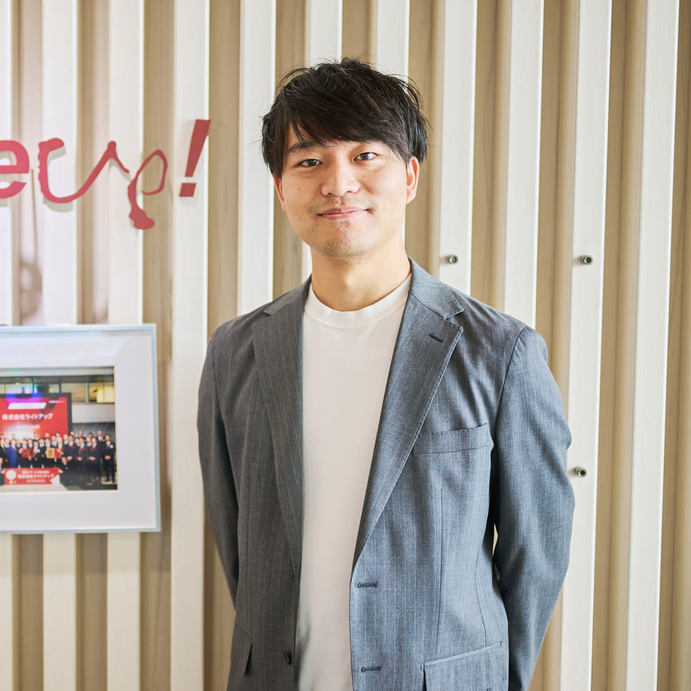
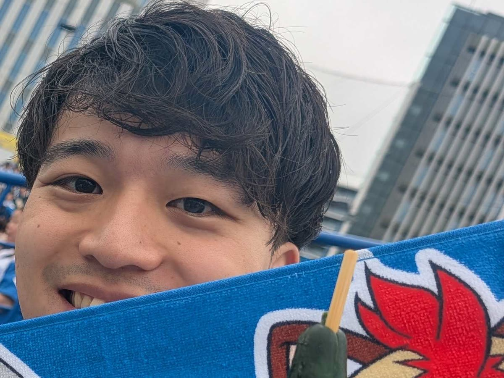
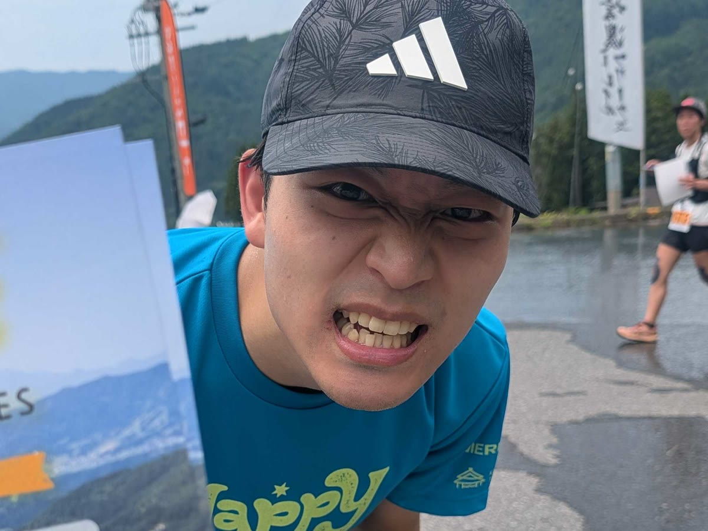

株式会社ライトアップ 経営コンサルチーム
マネージャー ／ AIサービスの新規部署立ち上げ

HOKKAIDO × ZERO TO ONE
SHIOZAKI
1年目から、
立ち上げてばかりいます。
MY MISSION
北海道の出身です。小学校までは旭川、中学と高校は札幌で過ごしました。大学から東京に出て、新卒でライトアップに入り、いまに至ります。
入社1年目に新規事業の担当になりました。役員と2人で、事業を立ち上げるところからです。1年目にこれをやったことが、そのあとの前提になっています。
そこからは営業、採用、CSなどを兼任しながら進み、5年目にマネージャーになりました。
いまはAIサービスの新規部署の立ち上げをしています。やっていることは、1年目とあまり変わりません。

北海道の出身ということもあって、大のファイターズファンです。大谷翔平選手のプロ野球デビュー登板を生で観たのが自慢で、いまでも年に数回は球場へ応援に行っています。
球場でご一緒できる方がいれば、ぜひ。
今年5月に結婚しました。相手が体力オバケで、フルマラソンに毎年出場し、同年代の女性では日本でトップ50に入るような人です。自分も12月の初マラソンに向けて、日々走っています。
先日の野沢温泉のトレイルランで、人生で初めて10km以上を走破しました。写真のとおり、本当に死ぬほどの想いをしています。全国17箇所にあるポケモンセンターを、今年ようやく制覇しました。2月には台湾にも行ってきています。残すはシンガポールなので、行けるチャンスを虎視眈々と狙っているところです。
商談で間が空いたときは、このあたりを振ってください。だいたい話が伸びます。
立ち上げるところから関わる仕事を、1年目からずっとやってきました。
入社1年目に役員と2人で新規事業を立ち上げ、いまはAIサービスの新規部署を立ち上げています。形が決まっていないところから始めるのが、いちばん長くやってきた仕事です。
マネージャーになるまで、営業と採用とCSを兼任しながら進んできました。どれか1つだけを見て判断しない癖は、このころについています。
入社5年目からマネージャーです。人を採るところから、立ち上がったあとの運び方まで含めて考えます。
立ち上げまわりの話であれば、遠慮なくどうぞ。
株式会社ライトアップ 経営コンサルチーム
塩崎 万朔（しおざき）